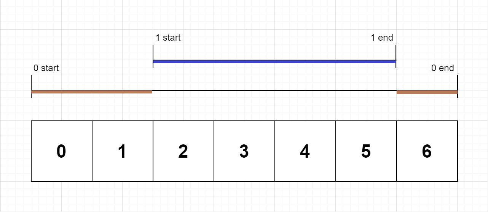

636. 函数的独占时间
用栈维护正在嵌套执行的函数，prev 记上一条日志的时刻；被中断或结束时用「当前时刻 − prev」增量结算，end 再 +1。
思路
start：栈顶函数被中断，先把[prev, ts)结算给栈顶；新函数入栈，prev = ts。end：end占满整个时间戳（闭区间），给该函数ts − prev + 1；出栈后prev = ts + 1（下一时刻才恢复）。- 全靠
prev增量记账：每条日志只结算刚过去的那一小段，被中断的函数多次累加自然拼出总独占时间。
图解
最优解
1import java.util.*;2 3class Solution {4 public int[] exclusiveTime(int n, List<String> logs) {5 int[] res = new int[n];6 Deque<Integer> stack = new ArrayDeque<>();7 // prev：上一条日志的时刻——start 记它的开始时刻，end 记 ts+1（end 算到时间戳末尾）8 int prev = 0;9 for (String log : logs) {10 String[] p = log.split(":");11 int id = Integer.parseInt(p[0]);12 int ts = Integer.parseInt(p[2]);13 if (p[1].equals("start")) {14 // 新函数挤进来了：栈顶函数到此为止，先把 [prev, ts) 结算给它15 if (!stack.isEmpty()) res[stack.peek()] += ts - prev;16 stack.push(id);17 prev = ts;18 } else {19 // end 算到时间戳末尾，所以是闭区间，长度 ts - prev + 120 res[id] += ts - prev + 1;21 stack.pop();22 prev = ts + 1;23 }24 }25 return res;26 }27}题目
有一个 单线程 CPU 正在运行一个含有 n 道函数的程序。每道函数都有一个位于 0 和 n-1 之间的唯一标识符。
函数调用 存储在一个 调用栈 上 ：当一个函数调用开始时，它的标识符将会推入栈中。而当一个函数调用结束时，它的标识符将会从栈中弹出。标识符位于栈顶的函数是 当前正在执行的函数 。每当一个函数开始或者结束时，将会记录一条日志，包括函数标识符、是开始还是结束、以及相应的时间戳。
给你一个由日志组成的列表 logs ，其中 logs[i] 表示第 i 条日志消息，该消息是一个按 "{function_id}:{"start" | "end"}:{timestamp}" 进行格式化的字符串。例如，"0:start:3" 意味着标识符为 0 的函数调用在时间戳 3 的 起始开始执行 ；而 "1:end:2" 意味着标识符为 1 的函数调用在时间戳 2 的 末尾结束执行。注意，函数可以 调用多次，可能存在递归调用 。
函数的 独占时间 定义是在这个函数在程序所有函数调用中执行时间的总和，调用其他函数花费的时间不算该函数的独占时间。例如，如果一个函数被调用两次，一次调用执行 2 单位时间，另一次调用执行 1 单位时间，那么该函数的 独占时间 为 2 + 1 = 3 。
以数组形式返回每个函数的 独占时间 ，其中第 i 个下标对应的值表示标识符 i 的函数的独占时间。
示例 1：

输入：n = 2, logs = ["0:start:0","1:start:2","1:end:5","0:end:6"] 输出：[3,4] 解释： 函数 0 在时间戳 0 的起始开始执行，执行 2 个单位时间，于时间戳 1 的末尾结束执行。 函数 1 在时间戳 2 的起始开始执行，执行 4 个单位时间，于时间戳 5 的末尾结束执行。 函数 0 在时间戳 6 的开始恢复执行，执行 1 个单位时间。 所以函数 0 总共执行 2 + 1 = 3 个单位时间，函数 1 总共执行 4 个单位时间。
示例 2：
输入：n = 1, logs = ["0:start:0","0:start:2","0:end:5","0:start:6","0:end:6","0:end:7"] 输出：[8] 解释： 函数 0 在时间戳 0 的起始开始执行，执行 2 个单位时间，并递归调用它自身。 函数 0（递归调用）在时间戳 2 的起始开始执行，执行 4 个单位时间。 函数 0（初始调用）恢复执行，并立刻再次调用它自身。 函数 0（第二次递归调用）在时间戳 6 的起始开始执行，执行 1 个单位时间。 函数 0（初始调用）在时间戳 7 的起始恢复执行，执行 1 个单位时间。 所以函数 0 总共执行 2 + 4 + 1 + 1 = 8 个单位时间。
示例 3：
输入：n = 2, logs = ["0:start:0","0:start:2","0:end:5","1:start:6","1:end:6","0:end:7"] 输出：[7,1] 解释： 函数 0 在时间戳 0 的起始开始执行，执行 2 个单位时间，并递归调用它自身。 函数 0（递归调用）在时间戳 2 的起始开始执行，执行 4 个单位时间。 函数 0（初始调用）恢复执行，并立刻调用函数 1 。 函数 1 在时间戳 6 的起始开始执行，执行 1 个单位时间，于时间戳 6 的末尾结束执行。 函数 0（初始调用）在时间戳 7 的起始恢复执行，执行 1 个单位时间，于时间戳 7 的末尾结束执行。 所以函数 0 总共执行 2 + 4 + 1 = 7 个单位时间，函数 1 总共执行 1 个单位时间。
提示：
1 <= n <= 1002 <= logs.length <= 5000 <= function_id < n0 <= timestamp <= 109- 两个开始事件不会在同一时间戳发生
- 两个结束事件不会在同一时间戳发生
- 每道函数都有一个对应
"start"日志的"end"日志
题面取自力扣当前版本。
数据快照 2026-11-04。题面版权归力扣所有，本站点仅供本人学习使用，请勿对外发布。